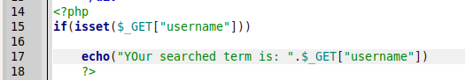
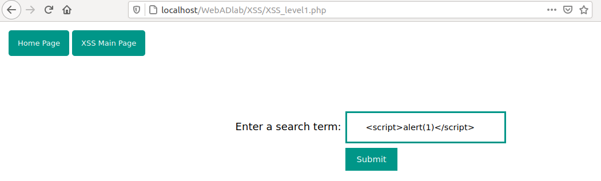
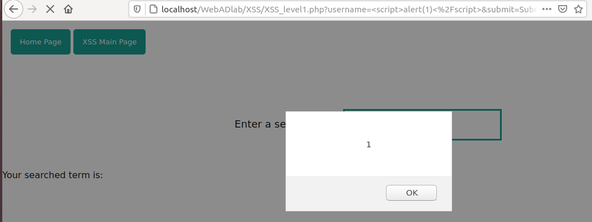
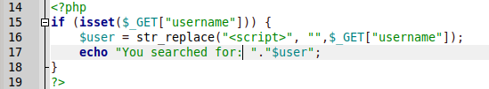
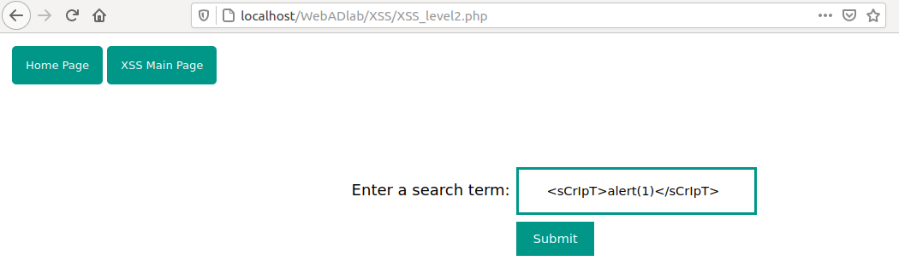
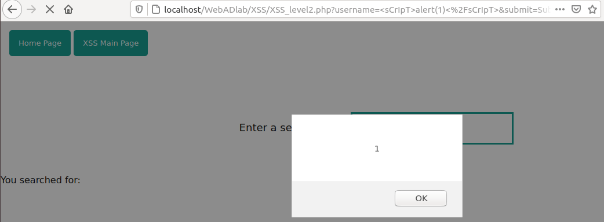
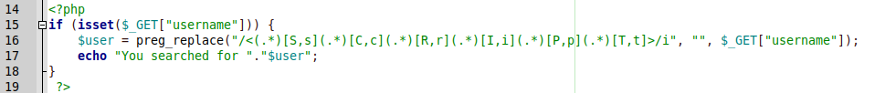
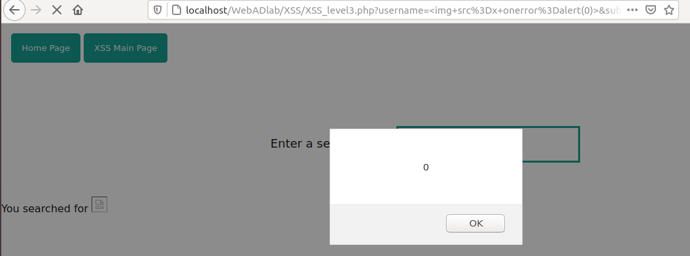

XSS
XSS or Cross Site Scripting means is a vulnerability that allows an attacker to inject malicious scripts into a vulnerable web application and the application executes the code. When any user input is reflected in the web page, and there is no sanitization of the input, there is high probability that the application is vulnerable to Cross Site scripting. This is a client side attack which means the individual user's session is affected. There are primarily 3 types of XSS.
Reflected XSS.
Stored XSS.
DOM XSS.
Reflected XSS: Reflected cross-site scripting (or XSS) arises when an application receives data in an HTTP request and includes that data within the immediate response in an unsafe way. When a user is tricked into clicking on a malicious link, submitting a specially crafted form, or even just browsing to a malicious site, the injected code travels to the vulnerable web site, which reflects the attack back to the user's browser. The browser then executes the code because it came from a "trusted" server. Reflected XSS is also sometimes referred to as Non-Persistent or Type-II XSS.
For example, consider a scenario where a vulnerable application receives user input from a search box like
https://vulnerable.com/search?term=anything
The input is reflected in the response without being filtered. An attacker can provide a malicious script in the search box like https://vulnerable.com/search?term=< script>alert(document.cookie)
and the script would be executed in the context of the current user.
Stored XSS: Stored cross-site scripting arises when an application receives data from an untrusted source and includes that data within its later HTTP responses in an unsafe way. Similar to Reflected XSS, an attacker can inject malicious script in the application and the input is stored on the server. This is most dangerous type of XSS as any user who accesses the web page gets affected. For example, an attacker may enter a malicious script into a user input field such as a blog comment field or in a forum post.
DOM XSS: DOM-based XSS is an advanced XSS attack. It is possible if the web application's client-side scripts write data provided by the user to the Document Object Model (DOM). The data is subsequently read from the DOM by the web application and renderd in the browser. If the data is incorrectly handled, an attacker can inject a payload, which will be stored as part of the DOM and executed when the data is read back from the DOM. A DOM-based XSS attack is often a client-side attack and the malicious payload is never sent to the server. This makes it even more difficult to detect for Web Application Firewalls (WAFs) and security engineers who analyze server logs because they will never even see the attack.
Level 1:
This is the simplest of all levels. The aplication takes an input and displays it on the page. Let us have a look at the source code:

As seen on line 17, the application echos back the search term which is passed using the GET method via username parameter without any sanatization. Hence we can try to inject the simplest payload
< script>alert(1).

And we get a popup with the value of 1!! We have successfully solved the challenge.

We can mitigate this by applying a blacklist to filter specific keywords and characters like "<" ">" etc to mitigate the attack. We will see them in next levels.
Level 2:
Similar to first level, we see a search box. We can try to inject a payload similar to previous level and see what happens. When supplied with < script>alert(1), the application does not gives a pop up. Strange. Let us see the source code and check what is up there.

As we can see that on line 16, a filter has been added that replaces all occurrences of "< script>" with an empty string and hence we get no output. We can try to bypass the filter using a malformed script tag such as < ScRiPt>. Lets see if this works.

And we get a pop-up!!

We have successfully bypassed the blacklist and completed the level.
Level 3:
We are presented *with the same search box. We can try to inject previous payloads and see of we get a pop-up. But as we see no results, the blacklist is a bit proper now. Or is it?
Let us see the source code:

As we can see on line 16, as soon as an angled bracket followed by a script tag is encountered, it is replaced with an empty string. So we cannot inject a script tag. Hmm.. what can we do next??
There is a feature in javascript known as event handlers. JavaScript applications in the Navigator are largely event-driven. Events are actions that occur, usually as a result of something the user does.
For example, a button click is an event, as is giving focus to a form element. There is a specific set of events that Navigator recognizes. You can define Event handlers, scripts that are automatically executed when an event occurs.
There are a number of event handlers. Such an event is "onerror". The onerror event is triggered if an error occurs while loading an external file (e.g. a document or an image).
Knowing this, we can try to supply an image tag with malformed source that throws an error. When that error is thrown, we can trigger our XSS payload. The sample payload being: < img src=x onerror=alert(1)>

And we successfully bypass the blacklist and get a pop-up!!

Level 4:
In this level, the blacklist is being a little strict. We can try to inject previous payload with the malformed img tag, malformed script tag but as we can see we get no XSS trigger.
Let us see the source code:

On line 18, we can see that the occurrences of script, prompt, alert, h1 tags are being filtered. So can't we get a pop-up? Hmm..not quite true. There are different interaction methods available to us in javascript. One being "confirm". As we can see, the application does not filter "confirm" but filters script tag. So we can try the malformed img tag with confirm in place of alert.
The payload will be < img src=x onerror=confirm(1)>

We get a pop up and successfully bypassed the blacklist.